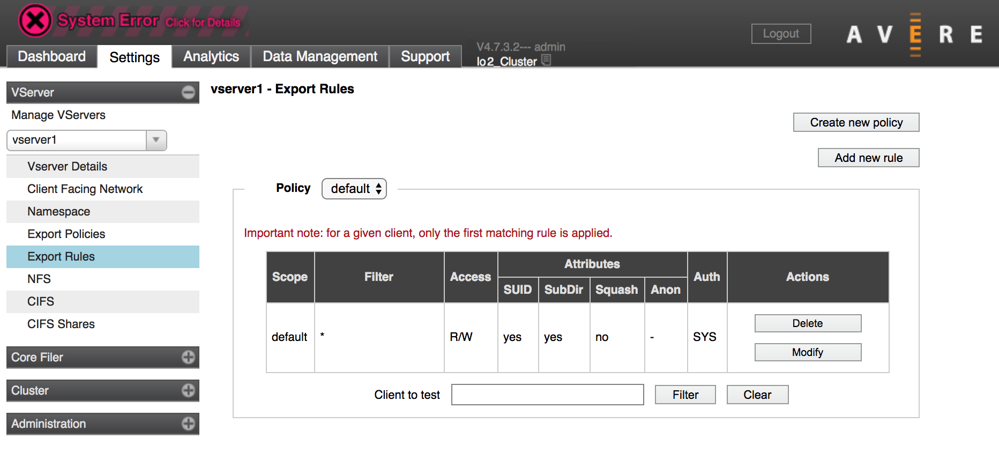
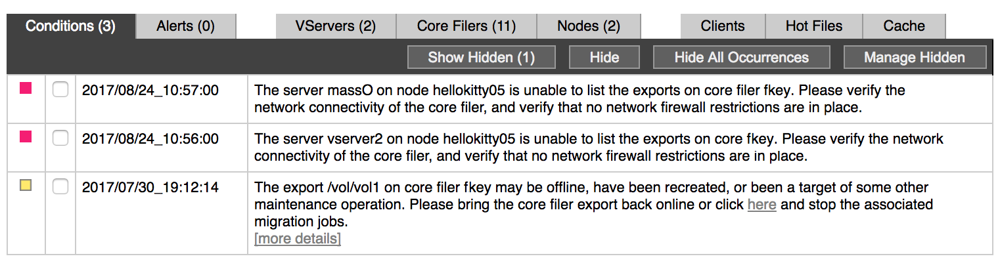
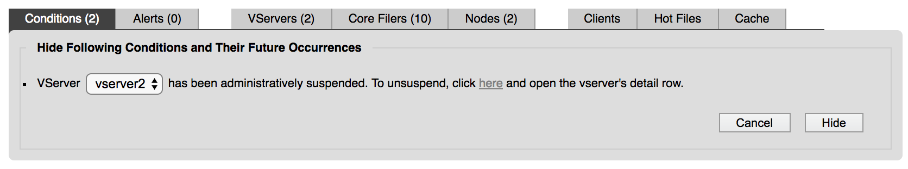
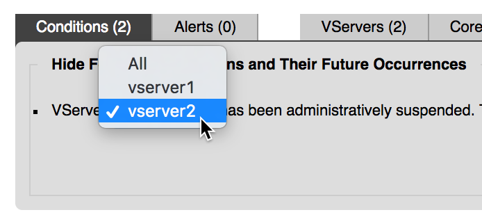
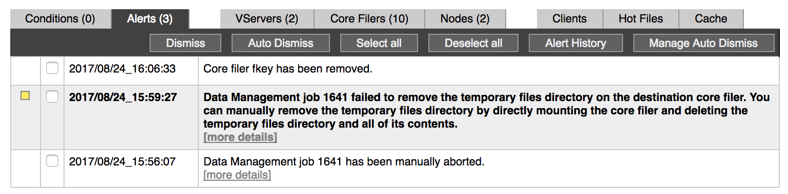
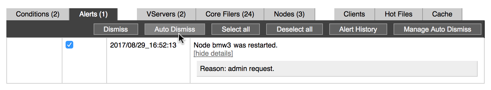
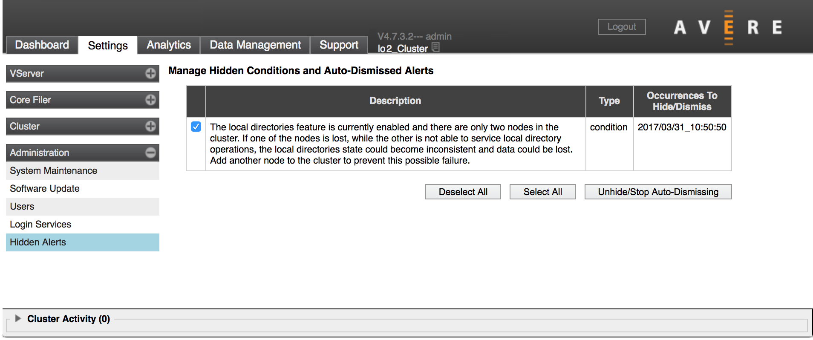
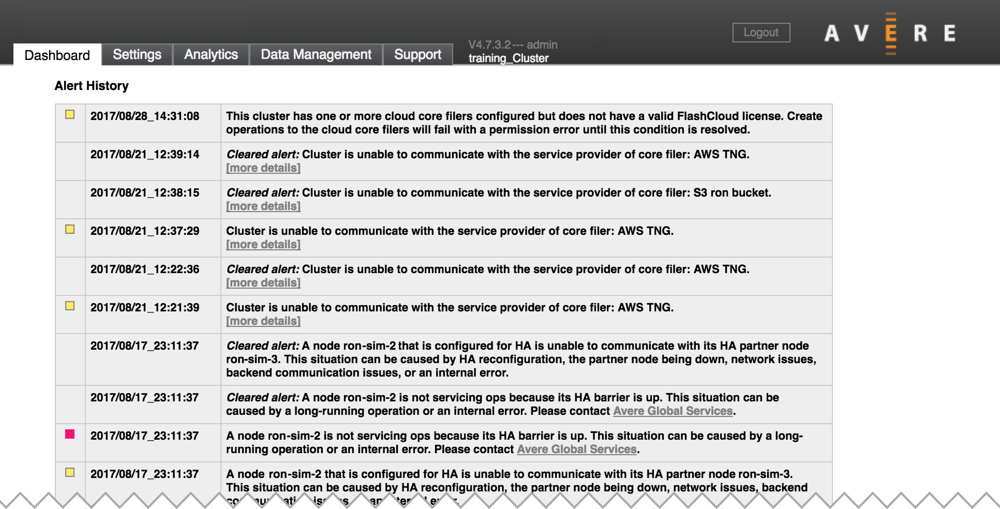

Monitoring Conditions and Alerts¶
Conditions and alerts are displayed in the Avere Control Panel dashboard. These notifications give information about unusual behavior in the cluster. They include a description of the situation, the severity of the issue (if applicable), and can include suggestions for how to resolve the situation.

The status table at the bottom of the dashboard page includes a tab labeled Conditions and a tab labeled Alerts. The tab header also shows the number of active notifications of that type.
Within each tab, the newest notification is displayed at the top, followed by any others in reverse chronological order.
Conditions versus Alerts¶
There are two main types of notifications, conditions and alerts.
A condition is given for an ongoing situation – for example, interrupted connectivity to a core filer. Conditions frequently require intervention from the cluster administrator to be resolved.
Conditions remain visible on the dashboard until the situation is resolved, and then they clear automatically. You can hide a condition from being displayed on the dashboard, but you cannot easily dismiss it while the underlying cause continues.
An alert is given for a transient situation that has occurred. For example, changing the software image or aborting a FlashMirror® job generates an alert.
Alerts remain visible until you dismiss them.
The Conditions and Alerts sections below include more information about each of these notification types and how to manage them.
Severity Color Coding¶
The Avere Control Panel uses color in dashboard notifications to indicate the seriousness of system issues.
- Red indicates a problem that can stop the cluster from serving client requests, interfere with data integrity, or affect other essential functions. These issues should be addressed urgently.
- Yellow indicates a situation that might become a problem if it continues. These issues should be evaluated and addressed to make sure they do not become serious.
- Colorless notifications are used for informational messages that do not indicate an imminent risk of disruption.
Color coding affects the notification at the top of the Avere Control Panel page and is indicated in the status table on the dashboard.
Conditions can be coded red or yellow. Alerts are usually yellow or uncolored.
{kind=link}
{kind=link}
Yellow condition notification for a significant issue
{kind=link}
Alert notification
Conditions¶
When the Avere cluster has an active error condition, a message appears in the top margin of the Avere Control Panel. The error message can be seen on each page in the control panel.
The screenshot below shows a page in the Settings section of the control panel with a visible system error message at the top.
{kind=link}
On the Dashboard page, active conditions are listed individually in the dashboard Conditions tab of the status table.
{kind=link}
This screenshot from a test cluster shows system errors related to an inaccessible core filer.
Conditions are listed in reverse chronological order (the newest notification is at the top). At the left of the notification’s timestamp, a colored box appears that represents the severity of the issue.
The main body of the table includes a description of the issue. Depending on the situation, some condition notifications include links.
- A More Details link shows additional text without leaving the Conditions table.
- Some messages also include links to suggested actions that might resolve the situation; those links can have various actions (for example, opening a Settings page or aborting a snapshot).
Be sure to read the message text carefully before clicking those links.
If you need help understanding a message or resolving the issue, contact Avere Global Services.
Evaluating Conditions¶
A condition notification does not necessarily mean that there’s something wrong with the Avere cluster. For example, when doing a software upgrade, it is normal to see multiple conditions as nodes are updated and rebooted. All of these conditions should clear on their own.
Also, occasionally a condition might fail to clear on its own. If you suspect a condition on your dashboard is no longer valid, you can hide or clear it.
Short-duration errors do not raise conditions; only situations that persist for a minute or longer result in a condition notification.
Hiding Conditions¶
You cannot dismiss an individual condition (unlike alerts); they must resolve themselves or be resolved by an administrator before they clear from the list of active conditions. However, you can hide conditions so that they are not listed on the main tab.
You might want to hide a condition if it’s related to a problem with a long-term solution. For example, if an FXT node has a failed disk and you are waiting for replacement hardware, you might want to hide the condition that notifies you that the node is operating without the failed drive.
A hidden condition is not listed on the Dashboard table.
If you hide all conditions, the System Error message in the top of the Avere Control Panel also disappears.
To hide one or more conditions, do one of the following:
- To hide specific conditions, click the checkbox at the left of the timestamp for each condition that you want to hide. Then click the Hide button. The selected conditions are removed from the list in the Conditions tab.
To hide current and future instances of the visible conditions, select the checkbox at the left of the timestamp for each condition that you want to hide. Then click the button labeled Hide All Occurrences.
Depending on the type of condition, a dialog might ask you to clarify the kind of future occurrences you want to hide.
For example, the screenshot below shows the confirmation dialog that appears when hiding all occurrences of a notice about a suspended vserver.
A menu lets you select which vserver’s conditions will be hidden, or to hide all such instances.

{kind=link}
{kind=link}
Viewing or Unhiding Conditions¶
You can view hidden conditions by clicking the Show Hidden button on the Conditions tab. You can discontinue hiding conditions by using the Hidden Alerts settings page. Read Unhiding Conditions and Canceling Auto-Dismiss for details.
Clearing All Conditions¶
If necessary, you can reset all condition warnings from the System Maintenance settings page.
Note
Conditions provide valuable information about your cluster’s performance. Clearing unresolved conditions is recommended only in rare situations.
If you need to clear all conditions for your cluster, navigate to the Settings > Administration > System Maintenance page. Under the Cluster Services heading, there is a button labeled Clear all conditions. Click it to reset all active conditions.
You cannot clear individual conditions.
Alerts¶
The Alerts tab shows system notifications.
The most recent alert is at the top of the list. Some alerts are highlighted with bold text – typically because they are new since the last page view or because of higher severity.
{kind=link}
Unlike conditions, alerts do not automatically clear from the list. You must clear them manually, or use Auto Dismiss to configure the Avere Control Panel to automatically clear alerts from certain system elements. Read Auto Dismiss for instructions.
Dismissing Alerts¶
To remove an alert from the list, select its checkbox and click the Dismiss button.
The checkbox is replaced with the status message dismissed for a few seconds, then the display refreshes without the dismissed alert.
Use the Select all button to act on all listed alerts. The Deselect all button cancels the selection.
You also can configure automatic dismissal for certain categories of alerts with the Auto Dismiss function.
Auto Dismiss¶
The Auto Dismiss function lets you automatically clear alerts. You can use this to help filter out alerts for known issues in your system or notifications that are not important to your workflow.
Automatically dismissed alerts can be viewed in the Alert History page.
To configure automatic dismissal:
Select one or more alerts from the list.
From the Alerts tab, choose Auto Dismiss.
An “Auto Dismiss” window appears. Depending on the type of alert selected, additional options (like node selection) might be included in this dialog.
Click Auto Dismiss to automatically dismiss similar alerts. Click Cancel if you do not want to take this action.
{kind=link}
{kind=link}
To remove alert types from auto-dismissal, choose Manage Auto Dismiss. You will be taken to the same page that allows you to unhide conditions, described in Unhiding Conditions and Canceling Auto-Dismiss.
Unhiding Conditions and Canceling Auto-Dismiss¶
To display hidden conditions, or to change auto dismiss settings for alerts, load the Hidden Alerts settings page.
Do one of the following:
- From the Conditions tab, choose Manage Hidden.
- From the Alerts tab, choose Manage Auto Dismiss.
This opens the Hidden Alerts page on the Settings tab, where you can select individual conditions and alerts.
Click the checkboxes for any of the conditions or alerts you want to remove.
Choose Unhide/Stop Auto Dismissing.
{kind=link}
When the dashboard display refreshes, the selected conditions will appear on the Conditions tab, and selected alerts will no longer be automatically dismissed.
Read more about the Hidden Alerts page in the Avere OS Configuration Guide: Administration > Hidden Alerts.
Viewing Condition and Alert History¶
To view a list of resolved and dismissed conditions and alerts, choose Alert History from the Alerts tab.
You are taken to the Alert History page.
{kind=link}
Resolved conditions and dismissed alerts are kept on the Alert History page until the history buffer is full, at which point the oldest notifications are purged to make room for new conditions and alerts.
The number of conditions and alerts the history buffer can hold varies by notification type, length, and other factors.
Click the Dashboard tab header or use your browser’s back button to return to the dashboard.
Remote Monitoring¶
You can configure a subset of system alerts to be sent by email or to a remote syslog server. Read Cluster > Monitoring in the Avere OS Configuration Guide to learn how.